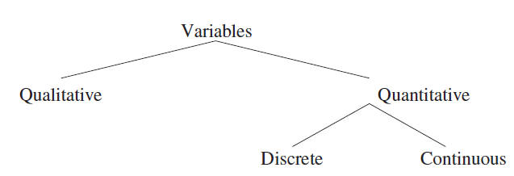
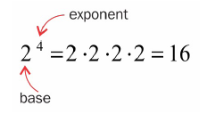
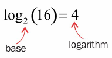
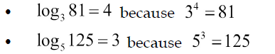

- Fri 19 July 2019
- Terminology-Series
- #Maths, #Statistics, #Terminology
As I begin my long adventure as a middle-age father of a toddler who is attempting to learn statistics, I’ll update this page until it becomes too unwieldy and awkward to use, then I’ll hopefully consider a more organised approach. Last updated: 2019-07-19
Statistic Types
- Descriptive Statistics - This branch of statistics is reporting values and averages on actual observations recorded
- Inferential Statistics - This branch of statistics is used to find relationships between multiple variables. Often used in insurance and gambling for example
Variable Types
There are two types of variables, categorical and numerical. Categorical variables are known as qualitative variables will normally group data together, Numerical variables, known as quantitive variables tells you how many or how often something happens, they can be counted and aggregated.
Qualitative Variable Subtypes
- Nominal - Example is Male:Female, neither is greater than the other, and there is no order.
- Ordinal - Example is Small:Medium:Large, there is a logical order to the groupings
Quantitive Variable Subtypes
- Discrete - these are whole numbers, such as the number of people who entered the shop today
- Continuous - these can be fractions, a persons age can be measured in years, months, days, hours, seconds, milliseconds.

Level of Variable Measurement
- Nominal Data can be classified/grouped, but cannot be placed into an order.
- Ordinal Data that can be placed into an order such as “small / medium/ Large”, ranking of A,B,C,D.
- Interval There are precise differences between observations, this can be temperature as an example IQ score. Interval measurements are missing a “true zero”. For example zero degrees temperature doesn’t mean there is no warmth/temperature. 20 degrees F is not twice as hot as 10 degrees F (because this measurement is actually the scale of energy in molecules, Kelvin is the measurement of temperature).
- Ratio Height, weight, area and number of occurances all come under ratio, and all have a true zero value. If you measure zero height, there is no height! If person 1 can lift 20kg and person 2 can lift 10kg, then person 1 can lift twice as much, a 2 to 1 ratio.
Dependent Variable
These are variables that are impacted when other variables are changed. For example as the number of cargo boxes on a transport ship increases, so does the weight of the ship itself. The weight is the dependent variable.
Independent Variable
These variables are not affected when other variables change. For example the width of a building will remain the same, even though you build extra hight (additional floors) to the building
Regression Analysis
This is a statistical process for estimating the relationship among variables. The focus is on the relationship between a dependent variable and one or more independent variables
Bivariate Data
Compare two variables. These are often set out in a plot, where the X axis is set to the independent variable, and the Y axis is set to the dependent variable.
Covariance
This is the measure of of two (or more) data fluctuating in sync. There is a correlation. The further away the measurement is from zero, the strong the covariance.
\(cov(X,Y)=\overset{1}{\bar{N}}\sum\limits_{i=1}^{N}(x_{i}-\bar{x})(y_i-\bar{y})\)
\(cov(X,Y)=\int\frac{1}{N}\sum\limits_{i=1}^{N}(x_{i}-\bar{x})(y_i-\bar{y})\)
Under-coverage bias
This is where you haven’t covered enough diverse sample. For example to stand out on your high street and ask who they will vote for in an election, and then assume that you can scale that up to represent the entire country.
Self-selection bias
If you pop up an optional survey on your website, there are certain types of people who will volunteer to fill it in, there are certain types of people who would never spend their time filling in the survey. So you now have a bias sample.
Survivorship bias
If you were doing an analysis piece on the stock market over the last X years, but you only included companies who have survived to present day, this is survivorship bias and should be avoided. You should look to include collapsed companies that were also on the stock market unless you have a specific reason not to.
t-Test
Independent Samples - This is testing the mean value of two different data sets Paired Sample - Testing the mean value for the same dataset on different times. Perhaps you gather data for 2018, then gather the same data but in 2019 and compare the values to see the differences. One Sample - tests the mean of a single group against a known mean. This known mean might be some fact or from other work someone else has previously done.
Exponent / Logarithm
These two math formula are often used to show the growth or recline of a quantity.
Exponent tells you the number of times you need to multiple a number by itself, in the example below 222*2 = 16

The logarithm is reversing the operation. Using 2 as the base, and 16 as the final result what is the logarithm (or exponent) value needed to achieve that 16 result.
More examples

Univariate distribution graphs
1) Histogram – visualise one feature at one time 2) Kernel Density Estimation (KDE) is also very popular
Bivariate distribution graphs
1) Scatter Plot
Skewness
In a histogram a normal distribution is when the shape of the bell curve is (or nearly) equal on both sides. Right skewed is when there is a longer tail on the right, and left skewed is when there is a longer tail on the left side (and so a sharp falloff on the right). In a left skewed distribution the mean value will be smaller than the median value. In a right skewed distribution the mean value will be higher than the median value.
Sampling
Sampling types to try and get a unbiased source of data